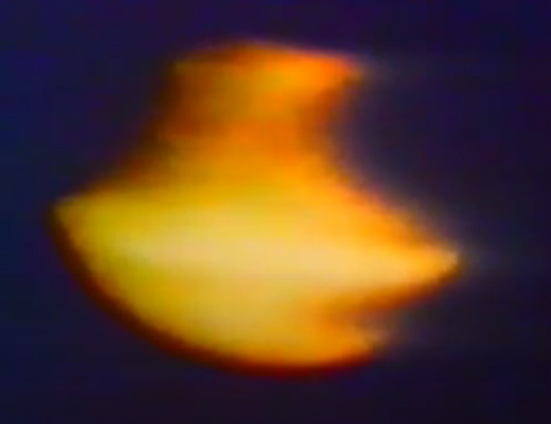

1978-12-21, New Zealand: Kikoura Lights Incident : TV news crew took video of UFO from an airplane.
Preface
- Daniel Liszt addressed the title case on the topic.Exerpt
i'm going to show you a case that took place in new zealand in 1978 30:19 we're talking 24 years ago this is what showed up on national 30:24 television and what was happening there was very interesting there was an airliner which 30:32 was being chased in real time by this thing they had a tv camera crew aboard 30:37 who took pictures of it um there were some other close-ups and and 30:44 all the rest and it was really remarkable let's face it 30:49 this case called the kikora lights uh 30:54 was in the new zealand media it was a series of ufo sightings this happened in december 1978 over the skies 31:01 of the kokora mountain ranges northeast of new zealand south island the first sightings were made december 21st this 31:08 thing was around for like eight days and um but because it was shot by a tv crew in 31:14 fact the footage is ten times better than the tic tac video so we've had you know um video that 31:21 shows the action of a ufo i mean it's been on the record so this idea that we just invented the ufo file in 2017 andVideo(1:47:56)
Dark Journalist Special Report: CIA Invades The UFO Filemy view 1
- I found the video in question. It is not a UFO but a mere orb (= atmospheric luminous phenomenon). - The orb below looks like a disk-shaped UFO because it is rotating at a high speed. The orb rotating at high speed was also photographed in (*1).  - Images captured in a single frame of film (between 30-40 msec) Video(0:46) Are UFOs Real: The Kaikoura Lights Incident 1978My view 2
- The site is located on an active fault line and has been the site of many major earthquakes in the past. Therefore, it is reasonable to conclude that an abnormal EMF (in this case, a strong electric field) generated by the active fault caused the orb.On November 13, 2016, a powerful earthquake jolted the northeastern coast of New Zealand’s South Island. The 7.8 magnitude quake lifted the seabed by 0.5 to 2 meters (2 to 7 feet) along a 20-kilometer stretch of the Kaikoura coast. In one area, the uplift was a remarkable 5.5 meters (18 feet). The sudden shifting of such a huge quantity of rock produced some unusual sights. From above, satellites captured an image of a thin swath of newly exposed land ringing the Kaikoura Peninsula and other parts of South Island. On November 25, 2016, a multispectral imager on the European Space Agency’s Sentinel 2 satellite captured an image (second) of the newly exposed land near Kaikoura. For comparison, the first image—acquired by the Operational Land Imager (OLI) on Landsat 8—shows the same area on October 12, 2016. The tidal water level was approximately the same in both cases. ref:Powerful Earthquake Exposes New Land Near Kaikoura - https://earthobservatory.nasa.gov/images/89206/powerful-earthquake-exposes-new-land-near-kaikouraVideo(1:31) Impacts of the Kaikoura Earthquake on the south end of Waipapa Bay, New Zealand(*1)
- Pictures of spinning orb Mexico, May 22, 2009: in broad daylight, the sphere in the sky separates and many small spheres extend in a straight line (on the way: Part 5) (2019-01-31) (2022-04-05)Original article
1978-12-21, New Zealand: Kikoura Lights 事件 : TV 取材班が航空機から UFO を動画撮影 (2022-04-05)
Thanks
Translated with www.DeepL.com/Translator (free version) (2022-04-14 translation)
First published
1978-12-21, New Zealand: Kikoura Lights Incident : TV news crew took video of UFO from an airplane. (2022-04-14)